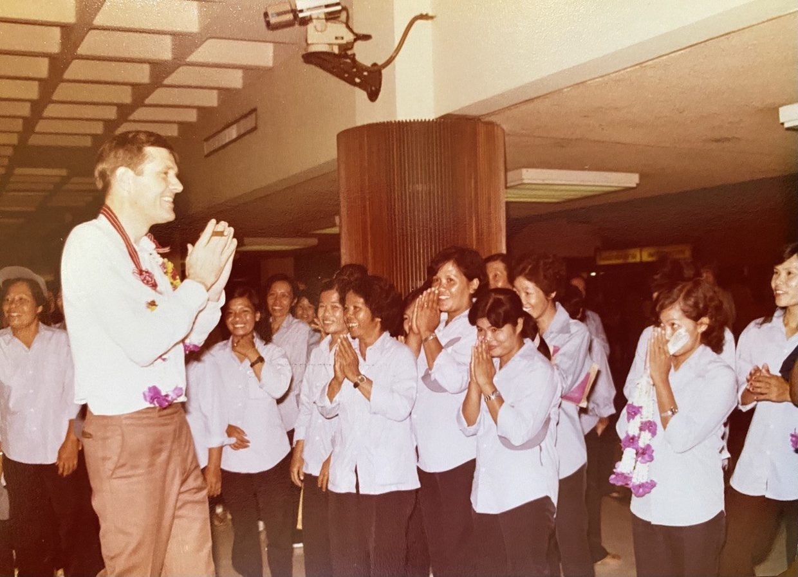
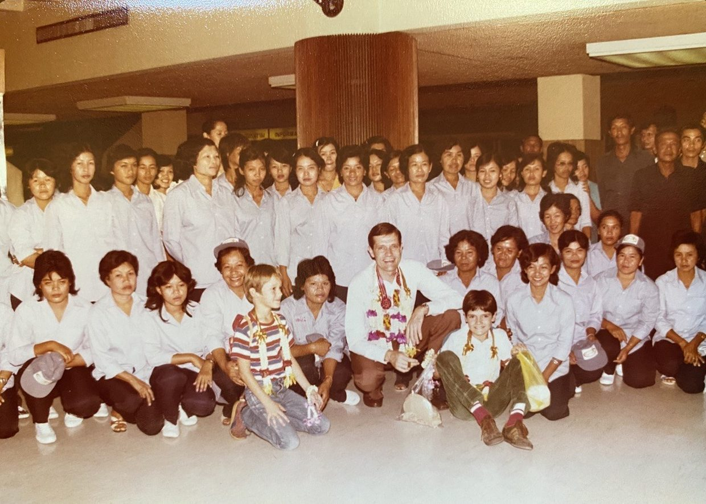
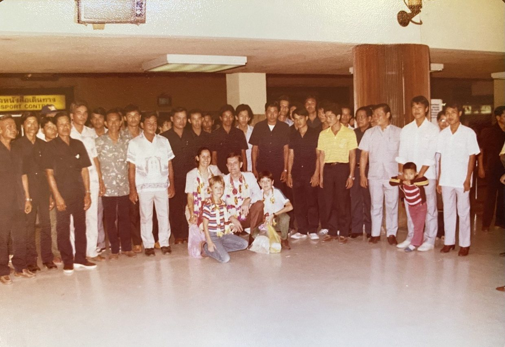
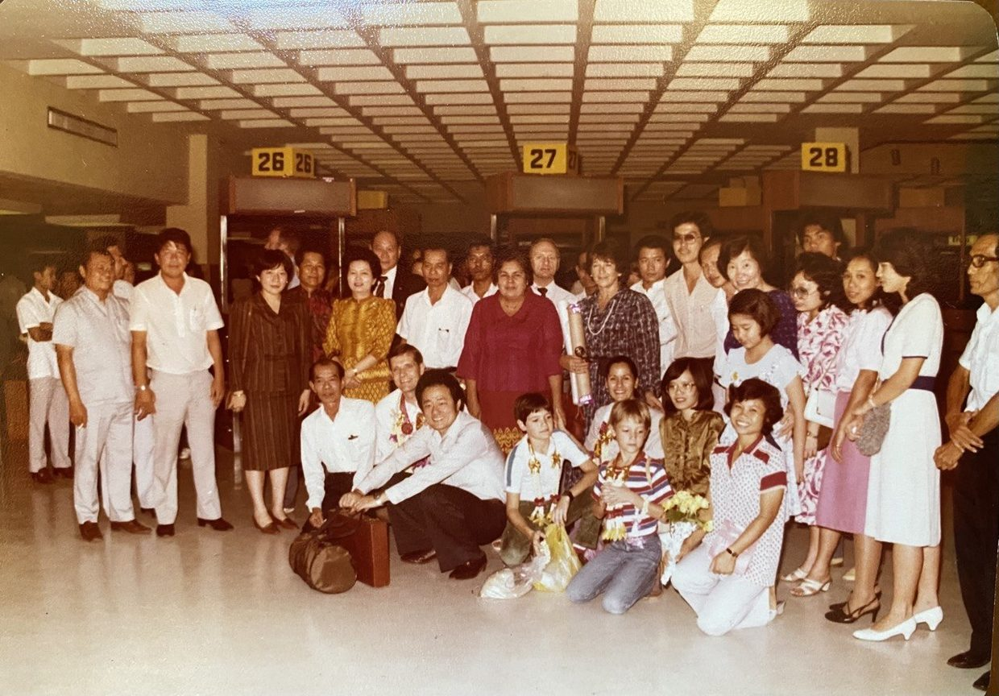

Foreword to Part II
This article draws on cross-cultural experiences from my own life. It is written in 3 parts, of which this is the 2nd part.
#4 Synthesis
While the things I state here are widely held as true, they are also difficult to prove or to explain. Considering the averages of my 40 years of observations and analyses, I often question their validity. Why is my perspective relevant, or why would it be helpful? What can I do to clarify things, to make them more workable, and to progress the cross-cultural narratives in Southeast Asia?
For any socially-oriented research, there would necessarily have to be a neutral perspective, a place from which our observations can be justified as being stable, dispassionate and objective. Who or what entity can reasonably provide this? Any observation of a culture would have to happen from the perspective of another person's culture, because no human being is free from it; and with culture comes a set of preferences and biases built into the operating system.
For social research to be relevant, there must also be hypotheses that inspire new models of acceptance, compromise, partnership, workability, strength in diversity or any other definable objective that gives rise to a relevant purpose for such research. This is, again, challenging, as the hypotheses themselves would mean different things to the different cultures. If a hypothesis in a body of cross-cultural research means one thing from the culture of the researcher, and another thing from the culture being researched, then what is its material value?
An example would be useful: there are many ways in which Thais (and foreigners who are long-time residents) attempt to explain the meaning of krengjai to someone new to the culture. A European listens to the explanation: "consideration for others, being aware of other people's feelings and showing politeness, respect and consideration towards others"; his initial response may be that he is already considerate and polite, or that he is going to try harder to be considerate and polite; he may be a mild-mannered person to begin with, be exceedingly direct, or somewhere in between; he may have a high level of emotional intelligence or be less so; and he may be coachable and adaptable or more set in his ways. Depending on his particular situation, he would interpret what was told to him and attempt to engage with the Thai people he works with in a way that he deems appropriate and productive.
And then the story gets even more interesting. His Thai colleague could be more or less familiar with farang. He or she may also be more or less considerate or accepting of the farang, more or less aware of his efforts, more or less able to interact in this cross-cultural twilight zone. Things may start out well and run smoothly for a while, until the farang unknowingly oversteps or is dismissive of something that's deemed important to the Thai. The misstep may also come from the very beginning. In either case, the seeds of resentment are sown early in the relationship, and gradually build over time.
Conversely, the Thai may also inadvertently behave in ways that the Westerner interprets as being disrespectful or inconsiderate, conflicting with the Westerner's cultural values and thereby undermining his ability to sustain his positive intentions. The examples and dynamics are naturally endless. Furthermore, what's learned, understood or interpreted in one cross-cultural relationship gets carried forward into the next. And so the inexperience and misunderstandings of the early stages, left unresolved, accumulate over time — informing new relationships from the aggregate of past experience, rather than each one starting with a blank slate.
What is being described here is the actual cross-cultural laboratory. While theories derived from social scientific research provide some guidelines, I would state (and this is firmly in the domain of opinion) that their usefulness is overstated. While we can do something with the definition of krengjai, the rational interpretation or understanding of its meaning from the perspective of a third culture can be more or less useful depending on the person; and its usefulness, while valid, really only serves as a starting point.
The cross-cultural journey of the individual only begins here. Over the course of months and years, and one interaction at a time, he gathers new experiences, and depending on how he interprets and processes these experiences he makes discoveries that increase his understanding and better inform his decisions, his speech and his actions. But no amount of theory will build the bridges, and no amount of signposts and guidelines will assure the success of this journey. The success of the journey ultimately comes down to continuous initiative, and to effort and creativity.
#5 Returning to Thailand
I returned to Thailand twice: the first time in 1985, I was 13 years old, and my father had accepted a posting in Sydney, Australia in 1982, only to return to Thailand 3 years later, when the first opportunity presented itself. One of my most vivid memories was our departure to Australia from Don Muang Airport. About 100 of my father's former employees came to say farewell, many of whom had stood in the back of a truck for nearly 4 hours, travelling all the way from Lopburi to Don Muang Airport to see my parents for what they believed would be the last time. People were visibly moved, they came with wreaths and gifts and we spent the better part of an hour saying our farewells. When we landed in Sydney 10 hours later, there was nobody at the airport to welcome us. It was a stark contrast.




The second time I returned to Thailand was in 1998. After graduating from International School Bangkok in 1990, I had spent 8 years abroad living, studying and working in several countries, first in Europe and then in the United States. It was the time of the Tom Yum Koong crisis. I started my first company (Fastrak Services) within months of returning and was poised to learn, for the first time, what it was to do business in Thailand.
Having grown up as the son of a senior executive, I had never been in the position of having to fend for myself in Thailand, or to get things done on my own. I neither knew how business worked here, nor had I any experience pitching to clients or hiring, training and managing people. I had trained and worked in Germany, and I had led the organisation of events in the United States, and from that limited experience I had a number of basic expectations.
What was true then and is less true now (a lot has changed):
- It was difficult to get correct and consistent answers to due process questions. For any submission to a government office, you couldn't learn how things were supposed to get done and follow the steps for a predictable outcome.
- It was difficult to discuss solutions with my staff. If they had run into problems, they were often unable to explore or suggest solutions. They wanted to be told what to do, versus participating in the decision.
- Staff would regularly end their employment without notice. They would not hand in their notice, they would simply not show up for work one morning, and there was no way to get an explanation, or to find out whether they had been upset by something that happened.
- People would nod in agreement, but as I came to understand, this neither meant that they agreed with what I was saying, nor that they understood my meaning.
These were the challenges of a young person starting a small business in 1998. I spoke fluent Thai, I was (am) a Thai citizen, and I grew up in Thailand. I should not have been surprised by these things, but I was. The years I spent growing up didn't reveal these cultural nuances. I literally had to start from square one and learn through experience.